MailDev 利用ガイド
開発者、プロジェクトオーナー/PM、メンバー、管理者、監査者向け。社内の開発・テスト環境用メールキャッチャー：アプリケーションは実際の宛先ではなくここへメールを送ります。
更新 2026-10-29
1. 背景
このシステムが必要な理由
開発・テスト中でもアプリケーションはメール（登録確認、パスワード再設定、請求書、通知）を送ります。多くのプロジェクトがコードや開発用設定に会社の本番 SMTP を書いていました。テストデータを本番からコピーすると宛先は実在の顧客になり、バッチ実行や誤クリック一つでテストメールが社外へ流出し、誰も気づかず追跡もできません。
- 顧客データの漏えいと会社の信用リスク。
- 誰が・どこから・いつ・何を送ったかの記録がない。
- 個人用メールキャッチャー（PC 上の MailDev/Mailpit）は QA や PM と共有できず、共有すると他プロジェクトのメールまで見えてしまう。
- 顧客は自分のプロジェクトのテストメールを見たいが AD アカウントがない。
MailDev はこれらを解決します。プロジェクトごとに隔離された領域を持ち、アプリは SMTP/API をここに向け、すべてのメールは閲覧用に保持され、オーナーがリレーを承認しない限り決して外部へ出ません。すべての操作は監査ログに記録されます。
2. システムの機能
プロジェクト単位で捕捉
SMTP（25、587 STARTTLS、465 TLS）または SendGrid、AWS SES、Azure Communication Services、Microsoft Graph、Gmail 互換 API で送信。認証情報がプロジェクトを決め、宛先は関係ありません。
どこでも閲覧
Outlook 風の Web UI、または IMAP（143/993）・POP3（110/995）で Outlook/Thunderbird/Apple Mail に追加。
漏えいなし
メールは実際の宛先に配信されません。リレーは管理者が有効化しオーナーが各メールを承認した場合のみ。
隔離と権限
AD ログイン。所属プロジェクトのみ表示。オーナーがメンバー管理、メンバーは閲覧。顧客は外部アカウント。
データ保護
プロジェクト別鍵（OpenBao）で保存時暗号化。14 日で自動削除。S/MIME 署名は社内 PKI で検証。
完全な監査
Web/SMTP/IMAP/POP3/API のログイン、捕捉した全メール、全操作とリレー判断を IP・時刻・プロトコル付きで記録。
用語
| 用語 | 意味 |
|---|---|
| プロジェクト | スラッグ（例 erp-stg）を持つ独立したメールボックス。固有の認証情報、メンバー、保持期間。 |
| 認証情報 | SMTP/IMAP/POP3 ログイン、API キー、SES 形式のキーペア。オーナーが再初期化（ローテーション）可能。 |
| オーナー | PM やリーダー。メンバー管理、認証情報の更新、リレー承認、プロジェクトの監査ログ閲覧。複数人可。 |
| メンバー | 開発者、QA。受信箱と開発情報の閲覧、メール削除、リレー依頼。 |
| 管理者 | システム管理：プロジェクトの作成/アーカイブ/削除、オーナー割当、ユーザー管理、保持期間、リレー先、全ログ。 |
| 監査者 | 読み取り専用：全プロジェクトと全監査ログを閲覧、変更不可。 |
| 外部アカウント | 管理者が顧客向けに作るローカル（非 AD）アカウント。メンバーのみ、デモには参加しない。 |
| デモプロジェクト | 共有サンドボックス：AD ユーザー全員がメンバー、管理者がオーナー。機密データは送らないこと。 |
3. ログイン
https://maildev.example.com を開き Active Directory アカウント（@example.com なし）でログインします。外部ユーザーは管理者から受け取ったユーザー名/パスワードを使い、初回にパスワード変更が必要です。
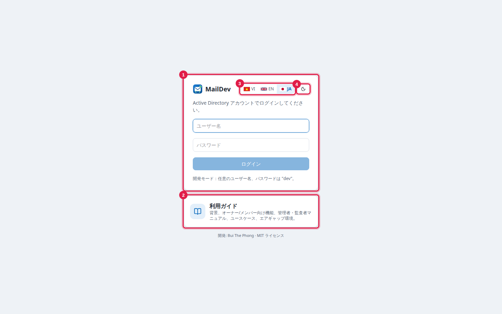
- 外部アカウントは 5 回失敗で 15 分ロック。管理者が早期解除できます。
- 言語とテーマはブラウザごとに記憶されます。
- セッションは 12 時間、使用中は延長されます。
4. ホーム
左列に所属プロジェクトが並びます。カーソルを合わせる（またはクリック）と右列に 開発情報、受信箱、オーナー/管理者には リレー待ち と プロジェクト管理 が表示されます。
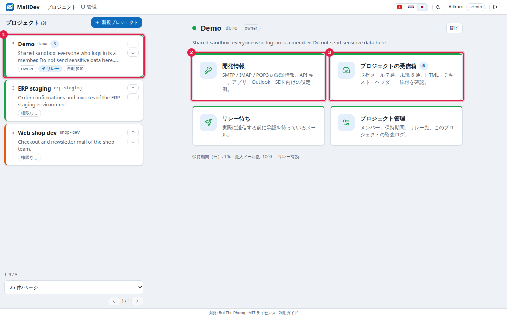
- カードの色はプロジェクトごとに固定され、ナビゲーションバーでも使われます。
- 矢印またはドラッグで並べ替え。順序はブラウザに記憶されます。
- オーナー/管理者は鉛筆アイコンで説明をその場で編集できます。
- 青いバッジは未読数です。
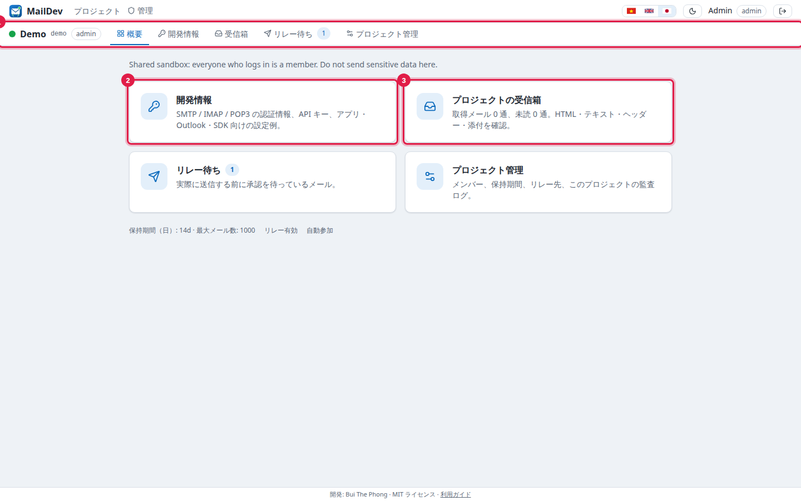
5. 開発情報（開発者向け）
認証情報と貼り付け用設定の置き場です。開発専用のため認証情報はそのまま表示されます。実メール送信に使ってはいけません。
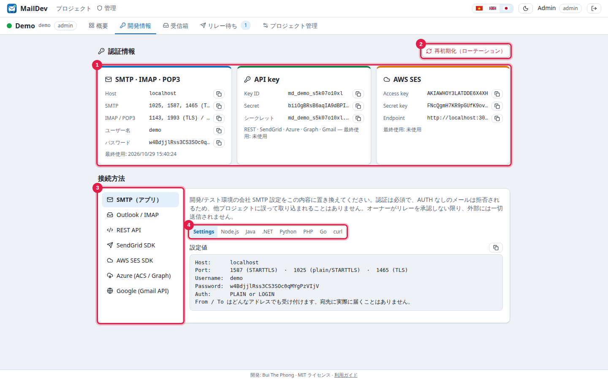
ホストとポート
| サービス | ホスト | ポート | 備考 |
|---|---|---|---|
| SMTP | smtp.maildev.example.com | 25（平文/STARTTLS）、587（STARTTLS）、465（TLS） | AUTH PLAIN/LOGIN 必須。未認証メールは拒否。 |
| IMAP | smtp.maildev.example.com | 143（STARTTLS）、993（TLS） | プロジェクトごとに INBOX が 1 つ。 |
| POP3 | smtp.maildev.example.com | 110（STLS）、995（TLS） | クライアントで削除するとプロジェクトからも削除。 |
| Web と API | maildev.example.com | 443 | インターネットに公開される唯一のポート。 |
SMTP でアプリを設定
SMTP（アプリ）タブに Node.js（nodemailer）、Spring Boot、Laravel/PHP、Django、.NET、Go、Java（jakarta.mail）のスニペットと swaks テストコマンドがあります。ホスト、ポート、ユーザー名、パスワードだけ変更し、From/To は本番と同じで構いません。
Host: smtp.maildev.example.com Port: 587 (STARTTLS) または 25 / 465 Username: <プロジェクトのスラッグ> Password: <プロジェクトの SMTP パスワード>
プロバイダー SDK（コード変更なし）
- SendGrid：SDK はそのまま、ホストを
https://maildev.example.com/sendgridに、API キーはプロジェクトのもの。 - AWS SES（v1/v2）：エンドポイントを
https://maildev.example.com/sesに、プロジェクトの SES 形式キーを使用。 - Azure Communication Services Email：接続文字列
endpoint=https://maildev.example.com/azure/<key id>;accesskey=<base64(secret)>。SDK は通常どおり HMAC 署名。 - Microsoft Graph sendMail：ベース URL
https://maildev.example.com/graph/<key id>/v1.0、ベアラー = API キー。 - Gmail API：ルート URL
https://maildev.example.com/gmail/<key id>、ベアラー = API キー。 - 汎用 REST：
POST /api/v1/send（JSON または raw RFC 822）。
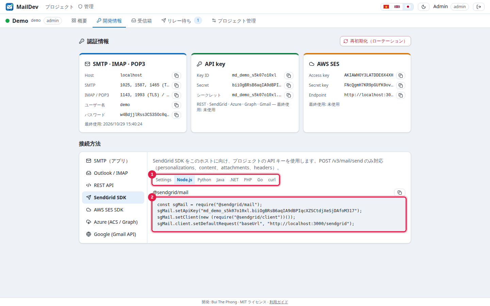
Outlook でメールを読む
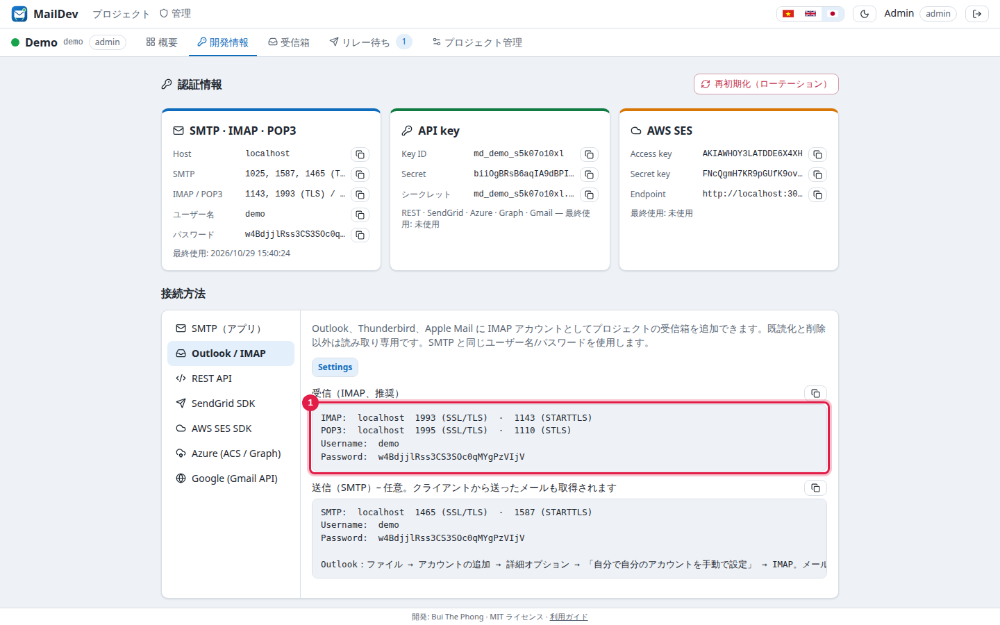
- Outlook：ファイル → アカウントの追加 → 詳細オプション → 「自分で自分のアカウントを手動で設定」 → IMAP。
- メールアドレス：任意（例
<slug>@maildev.local、ラベルのみ）。 - 受信：smtp.maildev.example.com、993、SSL/TLS。送信：smtp.maildev.example.com、465 SSL/TLS（または 587 STARTTLS）。
- ユーザー名/パスワード：プロジェクトの SMTP 認証情報。
6. 受信箱
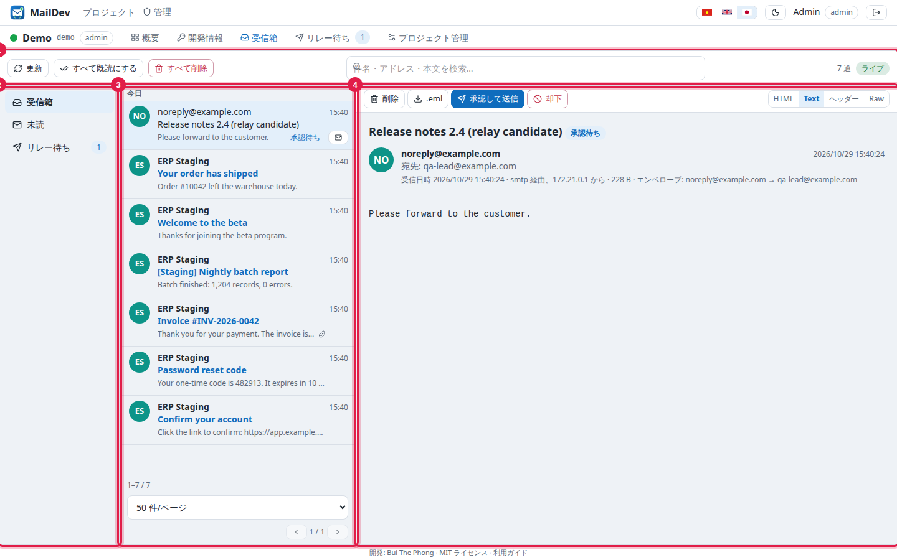
- 件名、アドレス（@ の前も）、本文テキストで検索。暗号化メールは本文検索不可、件名・アドレス検索は可能。
- ↑/↓ または j/k で移動。メールにカーソルを合わせて既読/未読を切替。
- 閲覧ペイン：HTML / Text / Headers / Raw。HTML モードはスマホ・タブレット・デスクトップ幅で表示確認。
- 外部画像は既定でブロック（トラッキングピクセル対策）。画像アイコンで読み込み。
- 添付はヘッダー下にチップ表示、クリックでダウンロード。
.emlダウンロードでメールクライアントで開けます。 - S/MIME メールはバッジ表示：有効（署名者）、無効（理由）、暗号化。
- 1 ページ 25/50/100 件。新着は即時表示（「ライブ」バッジ）。
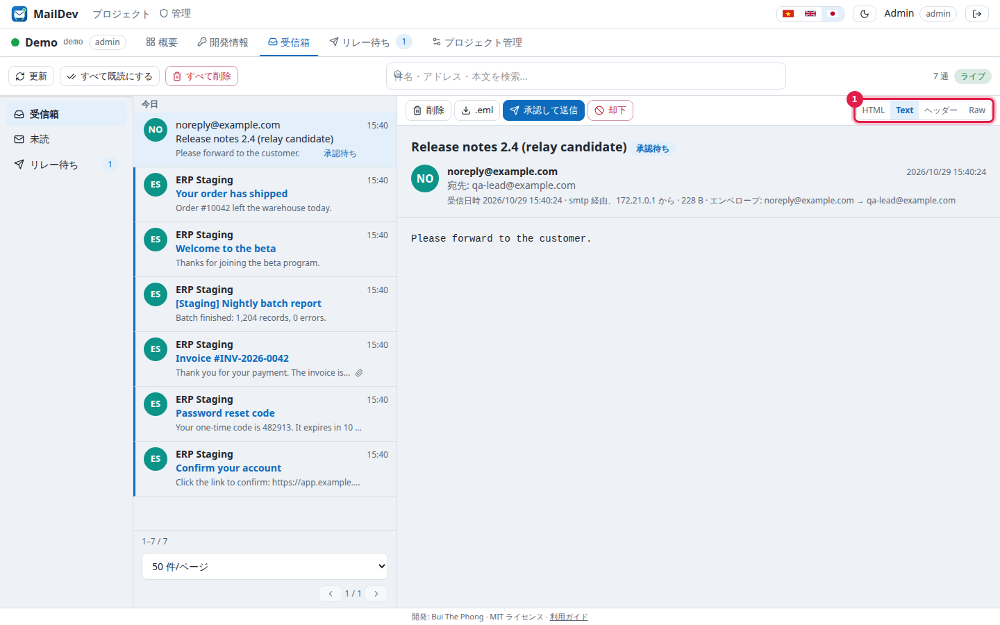
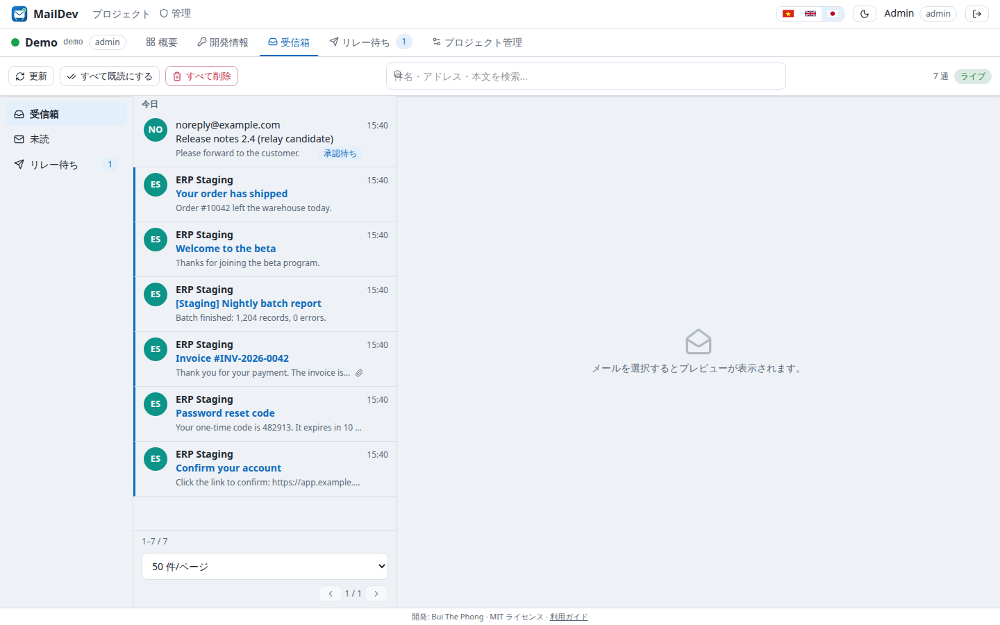
7. 主なユースケース
開発者がローカル/ステージングでアプリを動かす
- オーナーがプロジェクトを作成（または管理者に依頼）し認証情報を初期化。
- 開発者が SMTP（または SDK）設定を開発/ステージング設定に貼り付け。
- 通常どおりメール機能を実行し、受信箱で結果を確認、各幅で HTML を検証。
QA がメール確認フローをテスト
QA は Web か Outlook でプロジェクトの受信箱を開き、確認リンク/OTP を取得。実メールボックスは不要。
自動テスト（E2E）
GET /api/projects/<id>/emails?q=verification # 検索 GET /api/projects/<id>/emails/<eid> # 本文、添付 GET /api/projects/<id>/events # Server-Sent Events：新着待ち # ユーザーのセッション Cookie で認証（POST /api/auth/login）
承認したメールを実際に送る（リレー）
- 管理者がリレー先（会社 SMTP、SES、SendGrid）を設定しリレーを有効化。
- 以後、捕捉した全メールがリレー待ちに入る。
- オーナーが待ち行列を開き、1 件または複数を選んで承認（実送信）または却下、メモ付き。
- 許可リスト外の宛先はブロック。すべての判断を監査記録。
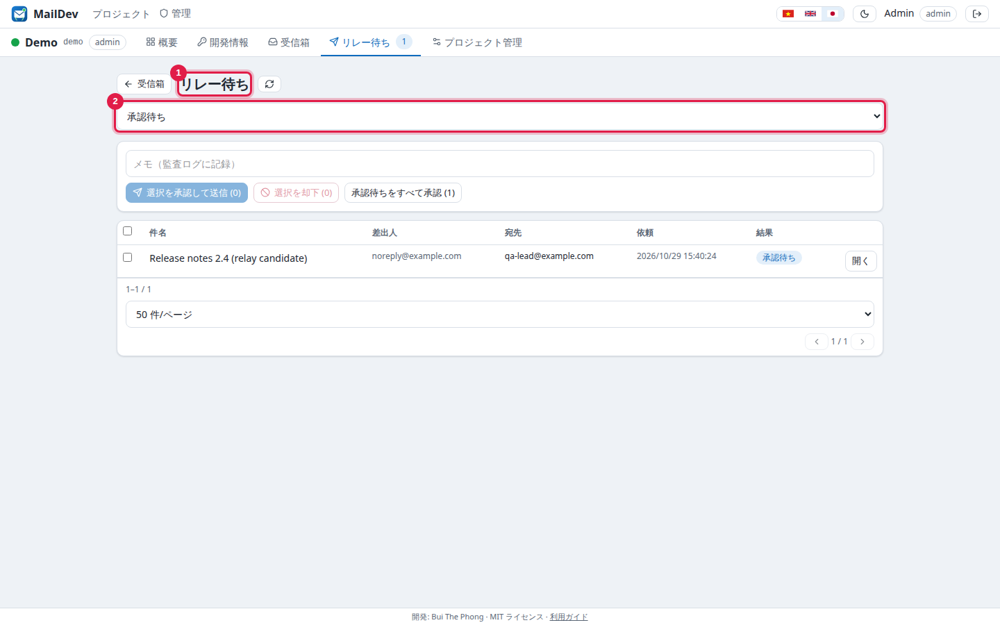
顧客が自プロジェクトのテストメールを確認
管理者が外部アカウントを作成、オーナーがメンバーとして追加。顧客はインターネット（443 のみ）からログインし、そのプロジェクトだけを閲覧。デモは見えず管理権限もなし。
S/MIME メール
OpenBao PKI（OpenBao）発行の証明書で署名されたメールは「… が署名 ✓」と表示。暗号化メールはそのまま保存され、Outlook がユーザーの証明書で復号。Web はラベルのみ表示。
8. オーナー / PM 向けガイド
オーナーはメンバーの全権限に加え、4 つのタブを持つプロジェクト管理を使えます。
メンバー
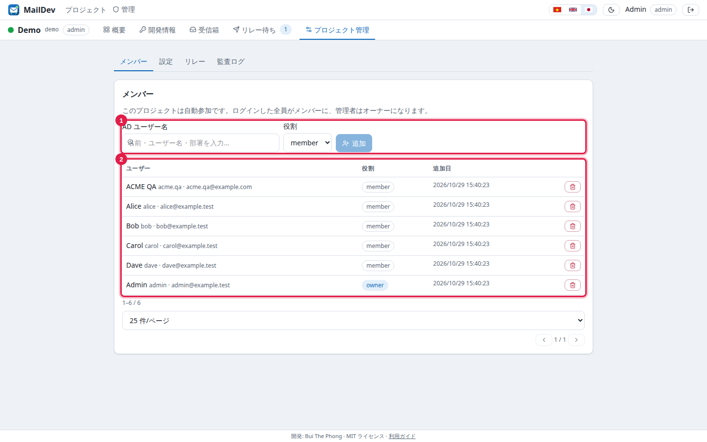
- 社員名簿（AD）にいる人または既存の外部アカウントのみ追加可能。不明な名前は拒否。
- 外部アカウントはメンバーのみ。
- 未ログインの人も追加可能。初回ログイン時に権限が有効になります。
設定
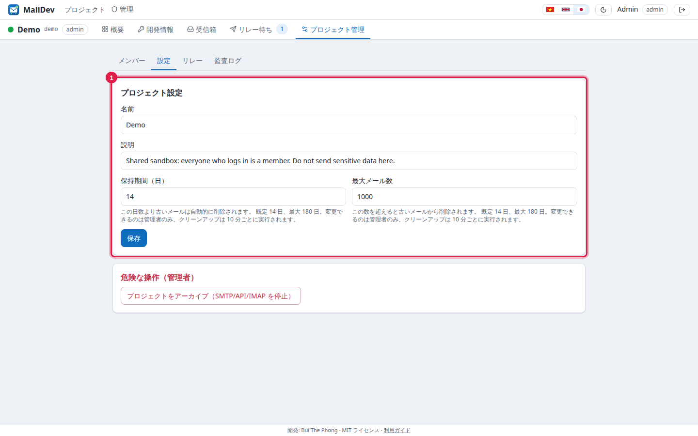
リレー
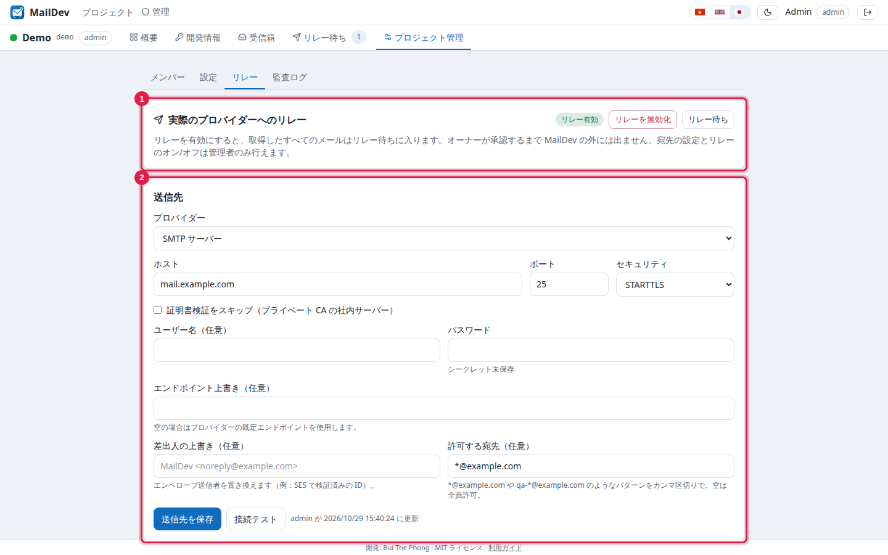
プロジェクトの監査ログ
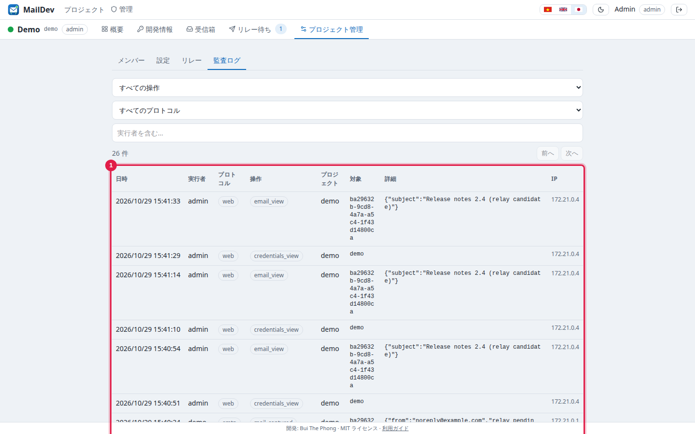
認証情報の再初期化
9. メンバー向けガイド
- 開発情報で認証情報と設定スニペットを取得。
- 受信箱でメールを閲覧、検索、削除、既読化。
- IMAP でプロジェクトの受信箱を Outlook に追加。
- リレー有効時は失敗/却下されたメールのリレーを再依頼可能。承認は不可。
- メンバー、設定、認証情報は変更不可。
10. 管理者向けガイド
管理メニューにはプロジェクト管理、ユーザー管理、ログ管理の 3 タブがあり、それぞれ検索、列ソート、フィルター、ページングを備えます。
プロジェクト管理
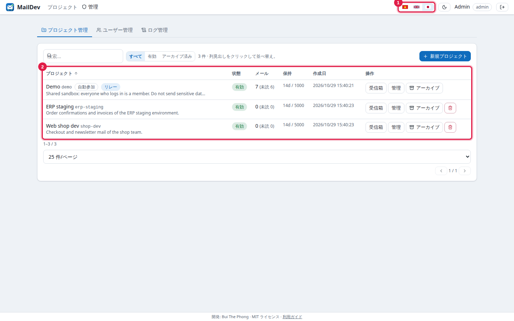
- 新規プロジェクト：スラッグ（小文字、数字、ハイフン。SMTP ユーザー名にもなる）、名前、オーナー（AD ユーザー名）、説明。認証情報は即時生成。
- アーカイブ：認証情報が無効化（SMTP/IMAP/POP3/API）、受信箱は読み取り専用、ローテーションやリレー判断は不可、クリーンアップ対象外。再有効化で復元。
- 削除：プロジェクトと全メールを完全削除。OpenBao の暗号鍵も破棄（バックアップも読めなくなる）。デモは削除不可。
- 保持期間：既定 14 日、管理者が 1〜180 日と最大件数を設定。クリーンアップは 10 分ごとに実行され
retention_cleanupとして記録。
ユーザー管理
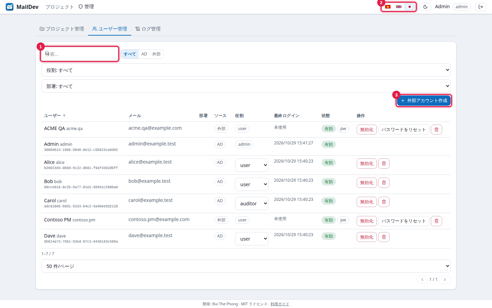
- 全社員が社員名簿（directory.example.com/users）から 15 分ごとに自動取り込み（部署付き）。未ログインの人は「未使用」。
- 役割の変更は AD アカウントのみ：admin、auditor、user。自分の降格は不可。
- 外部アカウント：一時パスワード（1 回表示）で作成、ログイン時に変更必須。リセット、ロック解除、無効化、削除。admin/auditor にはならず、デモにも入らない。
- ユーザー名の再利用：退職で AD アカウントが削除され、同名の新入社員は別の objectGUID になる。新入社員の初回ログイン時にアカウントをリセット：役割 user、全メンバーシップ削除、デモのみ、
user_identity_resetとして記録。 - 無効化するとそのユーザーの全セッションが終了。
ログ管理
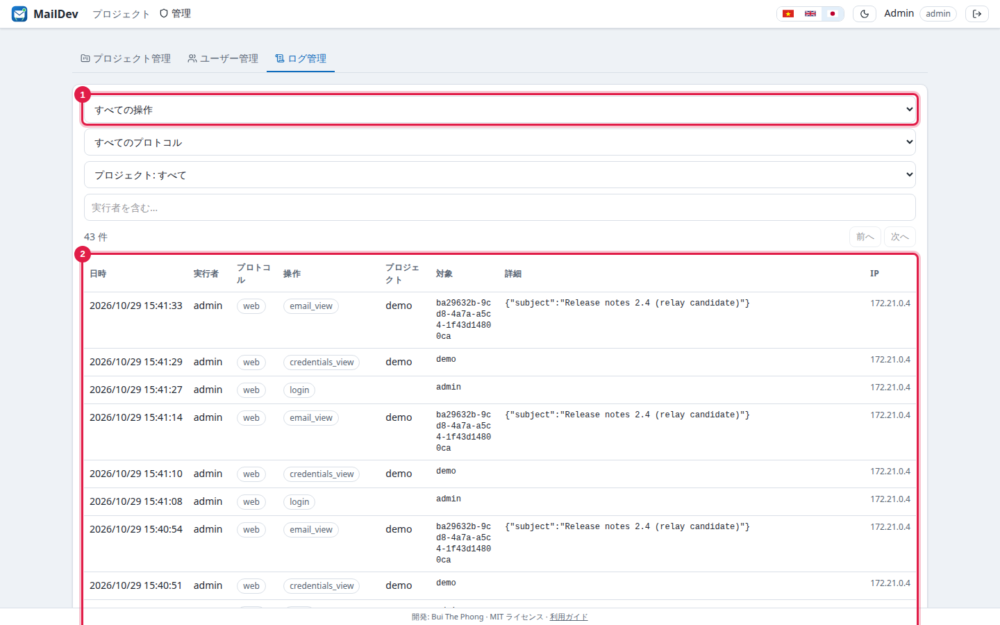
| 操作グループ | 例 |
|---|---|
| ログイン | login, login_failed, smtp_login, smtp_login_failed, imap_login, pop3_login, api_auth_failed（IP、TLS 付き） |
| プロジェクト / メンバー | project_create, project_update, project_delete, member_add, member_invite, member_remove |
| 認証情報 | credentials_init, credentials_reinit, credentials_view |
| メール | mail_captured（メールごと、送信元プロトコル）, email_view, email_download, attachment_download, email_delete, inbox_clear |
| リレー | relay_enable, relay_disable, relay_config_update, relay_test, relay_request, relay_approve, relay_sent, relay_failed, relay_reject |
| ユーザー | user_role_change, user_disabled_change, local_user_create, password_change, password_reset, user_unlock, user_delete, user_identity_reset |
| システム | retention_cleanup |
リレー先の設定
- プロジェクト → プロジェクト管理 → リレータブ。
- 種類を選択：SMTP サーバー（ホスト、ポート、None/STARTTLS/TLS、社内サーバー用の証明書検証スキップ、アカウント）、AWS SES（リージョン、アクセスキー、シークレット）、SendGrid（API キー）。エンドポイント上書き可。
- 任意：差出人上書き（SES の検証済み ID など）、宛先許可リスト（
*@example.com, qa-*@example.com）。 - 保存し、接続テスト（SMTP）を実行し、リレーを有効化。以後の新着メールはオーナー承認待ちになる。
*@example.com。運用
- ソース：GitLab
phongbui83/maildev（backend、frontend、deploy、maildev-lite）。deploy リポジトリの kustomize でデプロイ、名前空間maildev。 - データ：クラスタ外 PostgreSQL。メール、本文、添付は OpenBao Transit で包んだプロジェクト別鍵で暗号化。マスターキーと OpenBao AppRole を安全に保管。
- TLS 証明書は cert-manager（Let's Encrypt）が maildev.example.com と smtp.maildev.example.com に発行。AD への LDAPS は証明書ピン留め（AD 更新時に
make secretsを再実行）。 - アプリログは
maildev-apiポッドの JSON。
11. 監査者向けガイド
監査者は内部監査やセキュリティ部門向けの独立した読み取り専用ロールです。
- 全プロジェクトを閲覧：概要、開発情報、受信箱（読み取り専用）、メンバー、リレー設定（シークレットなし）、プロジェクトログ。
- ログ管理タブ：システム全体のログをプロジェクト、操作、プロトコル、実行者で絞り込み、ページング。
- メール削除、リレー承認、メンバー変更、プロジェクト作成は不可。
- 典型的な質問：誰がメール X をダウンロードしたか（
email_download）、今週プロジェクト Y に SMTP ログインしたホストは（smtp_login+ プロジェクト）、実際に送信されたメールは（relay_sentと承認者・宛先）、どのアカウントが ID リセットされたか（user_identity_reset）。
12. セキュリティとデータ
| 統制 | 実装 |
|---|---|
| 認証 | LDAPS 経由の AD、objectGUID をキーに。外部アカウントは argon2id、5 回失敗でロック、パスワード変更強制。 |
| 認可 | グローバル admin / auditor / user、プロジェクト別 owner / member、非メンバーには 404。 |
| 保存時暗号化 | プロジェクトごとのデータ鍵を OpenBao Transit の専用鍵で包む。raw、本文、添付を AES-GCM で暗号化。プロジェクト削除で鍵を破棄。 |
| 通信 | SMTP/IMAP/POP3/HTTPS に Let's Encrypt TLS。プロジェクト認証情報はマスターキーで AES-GCM 暗号化。 |
| 安全な表示 | サニタイズ済み HTML をサンドボックス iframe で表示、CSP で外部リソースを遮断。HTML/SVG 添付はダウンロード強制。 |
| S/MIME | OpenBao PKI チェーン（OpenBao pki-int/pki-root）と公開ルートで署名検証。復号はしない。 |
| 保持 | 既定 14 日、最大 180 日、10 分ごとにクリーンアップ、アーカイブ済みは対象外。 |
| 監査 | 全操作、全プロトコル、IP 付き。独立した監査者ロール。 |
13. エアギャップ環境
一部のプロジェクトは maildev.example.com、AD、OpenBao、中央 PostgreSQL にアクセスできない隔離ネットワークで動作します。
現在
- フル版は
docker compose（deploy リポジトリ）で同梱 PostgreSQL と共に動作。認証モードdevまたは顧客の LDAP、OpenBao 暗号化なし、S/MIME は CA ファイル。Postgres が許可される場合に適する。 - 持ち出し：
maildev/api、maildev/webイメージ、Postgres 1 つ、.env.exampleの変数。
Lite 版（リリース済み）
- 単一イメージ、単一プロジェクト、マルチテナントなし、AD なし。
- ローカルアカウント、既定 admin/admin と初回パスワード変更強制。
- PostgreSQL の代わりに SQLite（Postgres の承認が難しい現場向け）。
- パッケージング時に OpenBao PKI が発行する TLS 証明書をボリュームにマウント。
- フル版の UI と SMTP/IMAP/POP3、S/MIME、リレーのロジックを再利用。
phongbui83/maildev。14. FAQ
| 問題 | 対処 |
|---|---|
| SMTP が 530 Authentication required | アプリが AUTH を使っていないか認証情報が誤り。未認証メールは意図的に拒否されます。 |
| 535 Authentication credentials invalid | 認証情報が再初期化されたか、プロジェクトがアーカイブ済み。開発情報で再取得。 |
| メールが表示されない | 正しいプロジェクトに送っているか確認（SMTP ユーザー名 = スラッグ）。プロジェクトログで mail_captured や smtp_login_failed を確認。 |
| Outlook が証明書を警告 | IP ではなくホスト名 smtp.maildev.example.com（Let's Encrypt 証明書）を使用。 |
| 本文検索でヒットしない | 暗号化メールは件名とアドレスでのみ検索可能。 |
| メンバーを追加できない | 社員名簿にある名前か既存の外部アカウントのみ。外部アカウントはメンバーのみ。 |
| 件名や From は変更される？ | いいえ。件名、From、To は保持され、ルーティングは認証情報のみで決まります。 |
| どの宛先でも受信箱に入る？ | はい。オーナーがリレーを承認しない限り宛先には届きません。 |
連絡先：Bui The Phong、buithephong@gmail.com。